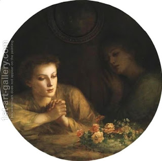

Nedarim 86 - Who made the vow?
If one thought that his wife made a vow, and he revoked it, and then it turned out that it was his daughter who made this vow - he must now revoke it for his daughter. His original revocation for this wife does not count. Similarly, if he thought that his wife vowed to abstain from grapes, and it turns out that she wanted to abstain from figs, he needs to do the revocation once more.
That is strange, because you can compare this case to one where he heard that his father died - and he tore his clothing, as required - and then they told him that it was his son who died - he does not have to tear his clothing again. Thus we see that he is not required to know the precise identity!
What is the difference? - in the case of tearing, they actually did not tell him who it was, and he tore without specifying the relative. This is why it worked for another relative. But normally, one has to be aware of the identity.
Another possible explanation is this: they did tell him who died, he tore the clothing, but then they informed him about a different identity - within a few seconds of the first statement. Thus, their correction is a continuation of the statement, and his tearing applies to a new relative. And how many seconds is required? - Enough to say "Peace to you, my teacher."
Art: Mourning And Melancholia by Charles Zacharie Landelle